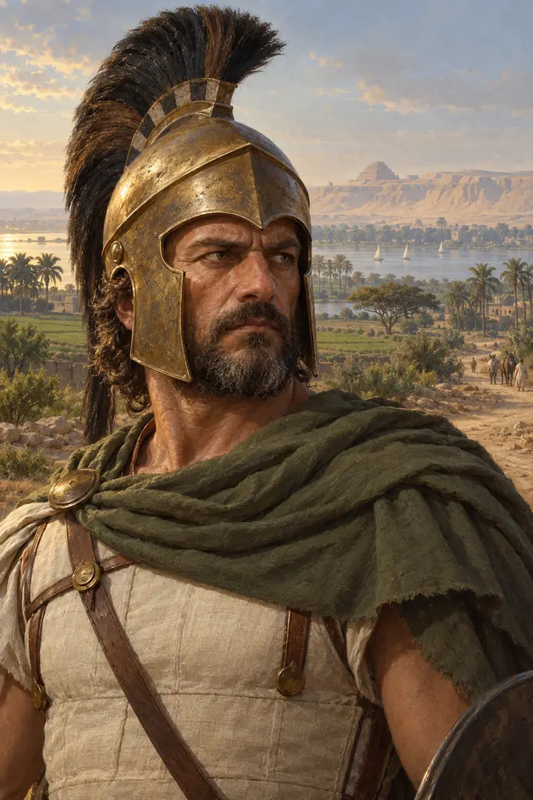
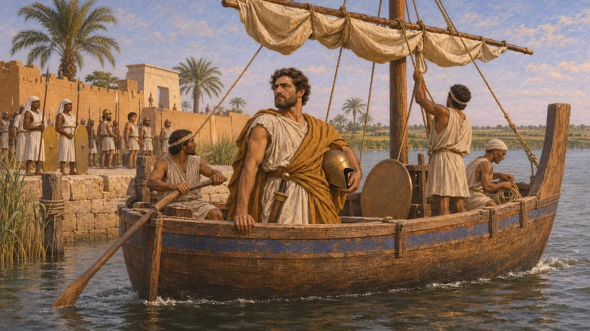
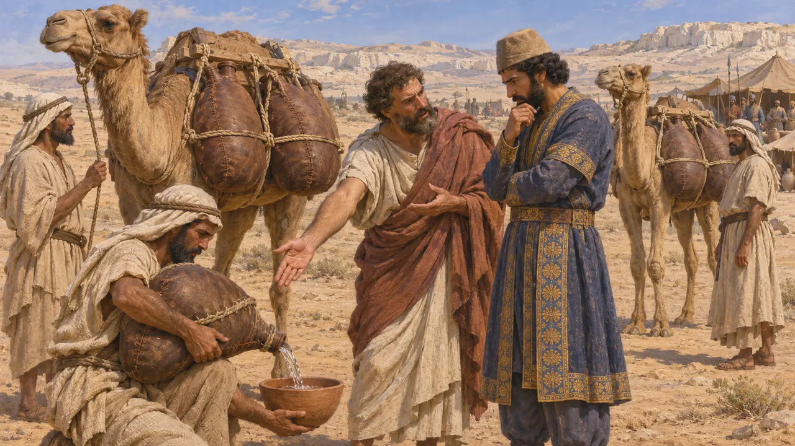
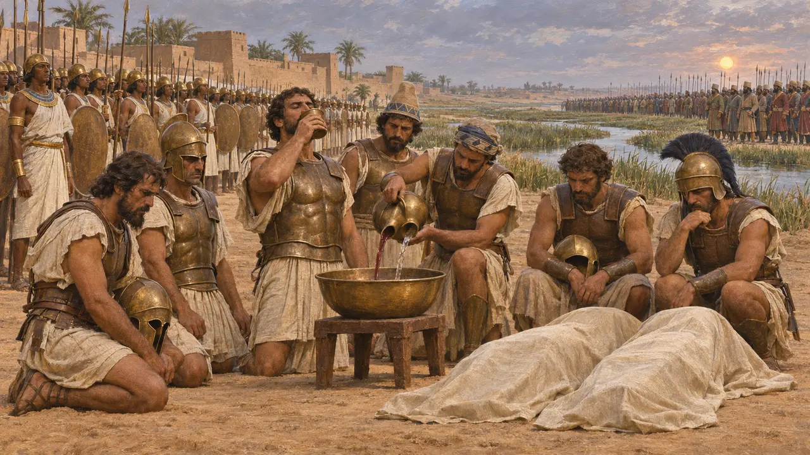
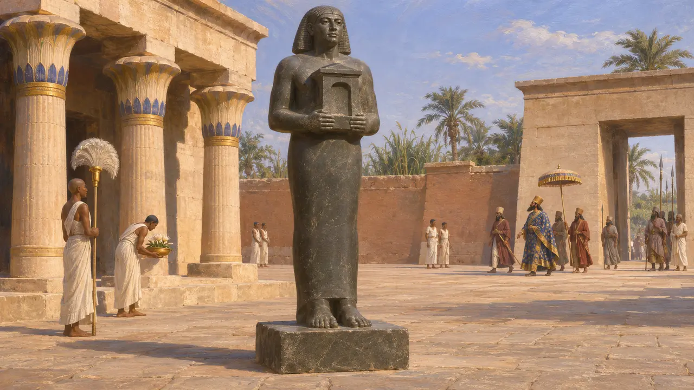

Halikarnassoslu Phanes
Mısır'ı bırakıp Kambyses'e geçen Yunan paralı asker subayı, MÖ 526-525 dolayları
Oyunda: Bölüm 2: Mızrak Taşıyıcı
Phanes, Mısır kralı Amasis için paralı askerlere komuta eden, ardından Pers kralı Kambyses'in tarafına geçen Halikarnassoslu bir Yunandı. Herodotos'a göre Kambyses'e Mısır hakkında içeriden bilgi vermiş ve bir orduyu susuz çölden Nil'e nasıl geçirebileceği konusunda ona öğüt vermiştir. Öyküsü yalnızca Herodotos'tan bilinir; Herodotos onu Perslerin MÖ 525'te Mısır'ı fethinde kilit isimlerden biri olarak gösterir.
Oyunda: Oyunun kroniği Phanes'i, Kambyses'in safına geçen, ona çöl yolunu gösteren ve Pelusion önünde oğullarını yitiren Yunan kaptan olarak anar. Terk ettiği firavunun adını vermez; Herodotos'a göre bu firavun III. Psamtik değil, Amasis'tir.

Amasis'in hizmetinde bir komutan
Antik anlatıHerodotos, Phanes'i Amasis'in yabancı paralı askerlerinden biri, sağduyulu ve savaşta yiğit bir adam olarak tanımlar. Phanes'in krala karşı bir kırgınlığı olduğunu söyler, ama bunun ne olduğunu açıklamaz; Phanes bir gemiyle gizlice kaçarak Kambyses'in yanına geçmiştir. Mısır bu dönemde büyük ölçüde Yunan ve Karyalı askerlere dayanıyordu; bu yüzden kıdemli bir paralı asker subayı ülkenin savunması hakkında muhtemelen pek çok şey biliyordu.
Herodotus 3.4

Kaçış ve çöl geçişine dair öğüt
Antik anlatıHerodotos'a göre Amasis, Phanes'in peşinden bir savaş gemisiyle güvendiği bir hadımı gönderdi; Phanes Likya'da yakalandı, ancak muhafızlarını sarhoş ederek kaçtı. Kambyses'in yanına varınca ona Mısır'ın durumunu anlattı ve güvenli geçiş için Arapların kralına başvurmasını öğütledi. Herodotos, Arapların ardından sefer için su sağladığını söyler ve bunun nasıl yapıldığına dair iki rivayet aktarır: tulum taşıyan develer ya da bir nehirden uzanan, derilerden yapılmış uzun bir boru.
Herodotus 3.4, 3.7, 3.9

Pelusion önünde öldürülen oğulları
Antik anlatıPersler geldiğinde Amasis ölmüştü ve yerine oğlu III. Psamtik hüküm sürüyordu. Herodotos'a göre Yunan ve Karyalı paralı askerler, Phanes'in Mısır'a karşı yabancı bir orduya yol göstermesine öfkelenerek onun oğullarını iki ordunun arasına getirdiler, bir kâsenin üzerinde boğazlarını kestiler, kanı şarap ve suyla karıştırıp içtiler ve ardından savaşa girdiler. Mısırlılar, Nil'in Pelusion ağzı yakınlarındaki çetin bir çarpışmanın ardından yenildi.
Herodotus 3.10-3.11

Hikâyenin ne kadarı güvenilir
TartışmalıHiçbir Pers ya da Mısır belgesi Phanes'in adını anmaz; Udjahorresnet'in heykel yazıtı Kambyses'in Mısır'a gelişini kaydeder ama ondan hiç söz etmez. Takip, sarhoş muhafızlar ve kan yemini birer anlatı gibi okunur; tarihçiler bunları Herodotos'un ne ölçüde biçimlendirdiğini tartışır. Bazı araştırmacılar onu Naukratis'te bulunan bir adak yazıtında adı geçen bir Phanes ile ilişkilendirir, ancak bu ad yaygındı ve özdeşleştirme kesin değildir.
Asheri, Lloyd and Corcella, A Commentary on Herodotus Books I-IV, 2007
Kaynaklar
- Herodotus 3.4-3.11
- Asheri, Lloyd and Corcella, A Commentary on Herodotus Books I-IV, 2007
- P. Briant, From Cyrus to Alexander, 2002
- Statue of Udjahorresnet (Vatican Museums)